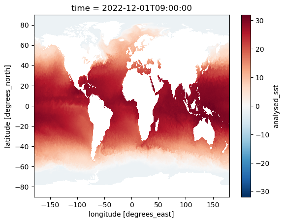

import cartopy.crs as ccrs
import matplotlib.pyplot as plt
import numpy as np
import xarray as xr
from datetime import dateCalculate MUR25 Sea Surface Temperature Global Mean
This notebook demonstrates how we calculate the area-weighted global mean sea surface temperature (SST) from the MUR25 L4 dataset.
You can run this on a local computer by downloading the data using the following command in your terminal:
podaac-data-downloader -c MUR25-JPL-L4-GLOB-v04.2 -d ./data/MUR25-JPL-L4-GLOB-v04.2 --start-date 2022-12-01T00:00:00Z --end-date 2022-12-31T23:00:00ZLoad required libraries and prepare data
ds = xr.load_dataset('~/data/MUR25-JPL-L4-GLOB-v04.2/20221201090000-JPL-L4_GHRSST-SSTfnd-MUR25-GLOB-v02.0-fv04.2.nc')
ds<xarray.Dataset>
Dimensions: (time: 1, lat: 720, lon: 1440)
Coordinates:
* time (time) datetime64[ns] 2022-12-01T09:00:00
* lat (lat) float32 -89.88 -89.62 -89.38 ... 89.38 89.62 89.88
* lon (lon) float32 -179.9 -179.6 -179.4 ... 179.4 179.6 179.9
Data variables:
analysed_sst (time, lat, lon) float32 nan nan nan ... 271.4 271.4 271.4
analysis_error (time, lat, lon) float32 nan nan nan ... 0.34 0.34 0.34
mask (time, lat, lon) float32 2.0 2.0 2.0 2.0 ... 9.0 9.0 9.0
sea_ice_fraction (time, lat, lon) float32 nan nan nan ... 0.97 0.97 0.97
sst_anomaly (time, lat, lon) float32 nan nan nan nan ... 0.0 0.0 0.0
Attributes: (12/54)
Conventions: CF-1.7, ACDD-1.3
title: Daily 0.25-degree MUR SST, Final product
summary: A low-resolution version of the MUR SST analy...
keywords: Oceans > Ocean Temperature > Sea Surface Temp...
keywords_vocabulary: NASA Global Change Master Directory (GCMD) Sc...
standard_name_vocabulary: NetCDF Climate and Forecast (CF) Metadata Con...
... ...
publisher_name: GHRSST Project Office
publisher_url: https://www.ghrsst.org
publisher_email: gpc@ghrsst.org
file_quality_level: 3
metadata_link: http://podaac.jpl.nasa.gov/ws/metadata/datase...
acknowledgment: Please acknowledge the use of these data with...xarray.Dataset
- time: 1
- lat: 720
- lon: 1440
- time(time)datetime64[ns]2022-12-01T09:00:00
- long_name :
- reference time of sst field
- standard_name :
- time
- coverage_content_type :
- coordinate
- axis :
- T
- comment :
- Nominal time of analyzed fields
array(['2022-12-01T09:00:00.000000000'], dtype='datetime64[ns]')
- lat(lat)float32-89.88 -89.62 ... 89.62 89.88
- long_name :
- latitude
- standard_name :
- latitude
- coverage_content_type :
- coordinate
- axis :
- Y
- units :
- degrees_north
- valid_min :
- -90.0
- valid_max :
- 90.0
- comment :
- geolocations inherited from the input data without correction
array([-89.875, -89.625, -89.375, ..., 89.375, 89.625, 89.875], dtype=float32) - lon(lon)float32-179.9 -179.6 ... 179.6 179.9
- long_name :
- longitude
- standard_name :
- longitude
- coverage_content_type :
- coordinate
- axis :
- X
- units :
- degrees_east
- valid_min :
- -180.0
- valid_max :
- 180.0
- comment :
- geolocations inherited from the input data without correction
array([-179.875, -179.625, -179.375, ..., 179.375, 179.625, 179.875], dtype=float32)
- analysed_sst(time, lat, lon)float32nan nan nan ... 271.4 271.4 271.4
- long_name :
- analysed sea surface temperature
- standard_name :
- sea_surface_foundation_temperature
- coverage_content_type :
- physicalMeasurement
- units :
- kelvin
- valid_min :
- -32767
- valid_max :
- 32767
- comment :
- "Final" version using Multi-Resolution Variational Analysis (MRVA) method for interpolation
- source :
- MODIS_T-JPL, MODIS_A-JPL, AMSR2-REMSS, AVHRRMTB_G-NAVO, iQUAM-NOAA/NESDIS, Ice_Conc-OSISAF
array([[[ nan, nan, nan, ..., nan, nan, nan], [ nan, nan, nan, ..., nan, nan, nan], [ nan, nan, nan, ..., nan, nan, nan], ..., [271.35, 271.35, 271.35, ..., 271.35, 271.35, 271.35], [271.35, 271.35, 271.35, ..., 271.35, 271.35, 271.35], [271.35, 271.35, 271.35, ..., 271.35, 271.35, 271.35]]], dtype=float32) - analysis_error(time, lat, lon)float32nan nan nan nan ... 0.34 0.34 0.34
- long_name :
- estimated error standard deviation of analysed_sst
- coverage_content_type :
- qualityInformation
- units :
- kelvin
- valid_min :
- 0
- valid_max :
- 32767
- comment :
- uncertainty in "analysed_sst"
array([[[ nan, nan, nan, ..., nan, nan, nan], [ nan, nan, nan, ..., nan, nan, nan], [ nan, nan, nan, ..., nan, nan, nan], ..., [0.34, 0.34, 0.34, ..., 0.34, 0.34, 0.34], [0.34, 0.34, 0.34, ..., 0.34, 0.34, 0.34], [0.34, 0.34, 0.34, ..., 0.34, 0.34, 0.34]]], dtype=float32) - mask(time, lat, lon)float322.0 2.0 2.0 2.0 ... 9.0 9.0 9.0 9.0
- long_name :
- sea/land field composite mask
- coverage_content_type :
- referenceInformation
- valid_min :
- 1
- valid_max :
- 31
- flag_masks :
- [ 1 2 4 8 16]
- flag_meanings :
- water land optional_lake_surface sea_ice optional_river_surface
- comment :
- flag interpretation as integer values: 1=water, 2=land, 5=lake, 9=water with ice in the grid, 13=lake with ice in the grid, 17=river
- source :
- GMT "grdlandmask", ice flag from sea_ice_fraction data
array([[[2., 2., 2., ..., 2., 2., 2.], [2., 2., 2., ..., 2., 2., 2.], [2., 2., 2., ..., 2., 2., 2.], ..., [9., 9., 9., ..., 9., 9., 9.], [9., 9., 9., ..., 9., 9., 9.], [9., 9., 9., ..., 9., 9., 9.]]], dtype=float32) - sea_ice_fraction(time, lat, lon)float32nan nan nan nan ... 0.97 0.97 0.97
- long_name :
- sea ice area fraction
- standard_name :
- sea_ice_area_fraction
- coverage_content_type :
- auxiliaryInformation
- valid_min :
- 0
- valid_max :
- 100
- source :
- EUMETSAT OSI-SAF, copyright EUMETSAT
- comment :
- ice fraction is a dimensionless quantity between 0 and 1; it has been interpolated by a nearest neighbor approach.
array([[[ nan, nan, nan, ..., nan, nan, nan], [ nan, nan, nan, ..., nan, nan, nan], [ nan, nan, nan, ..., nan, nan, nan], ..., [0.96 , 0.96 , 0.96 , ..., 0.96 , 0.96 , 0.96 ], [0.96 , 0.96 , 0.96 , ..., 0.96999997, 0.96999997, 0.96999997], [0.96 , 0.96 , 0.96 , ..., 0.96999997, 0.96999997, 0.96999997]]], dtype=float32) - sst_anomaly(time, lat, lon)float32nan nan nan nan ... 0.0 0.0 0.0 0.0
- long_name :
- SST anomaly from a seasonal SST climatology based on the MUR data over 2003-2014 period
- coverage_content_type :
- auxiliaryInformation
- units :
- kelvin
- valid_min :
- -32767
- valid_max :
- 32767
- comment :
- anomaly reference to the day-of-year average between 2003 and 2014
array([[[nan, nan, nan, ..., nan, nan, nan], [nan, nan, nan, ..., nan, nan, nan], [nan, nan, nan, ..., nan, nan, nan], ..., [ 0., 0., 0., ..., 0., 0., 0.], [ 0., 0., 0., ..., 0., 0., 0.], [ 0., 0., 0., ..., 0., 0., 0.]]], dtype=float32)
- Conventions :
- CF-1.7, ACDD-1.3
- title :
- Daily 0.25-degree MUR SST, Final product
- summary :
- A low-resolution version of the MUR SST analysis, a merged, multi-sensor L4 Foundation SST analysis product from JPL.
- keywords :
- Oceans > Ocean Temperature > Sea Surface Temperature
- keywords_vocabulary :
- NASA Global Change Master Directory (GCMD) Science Keywords
- standard_name_vocabulary :
- NetCDF Climate and Forecast (CF) Metadata Convention
- history :
- created at nominal 4-day latency; replaced nrt (1-day latency) version.
- source :
- MODIS_T-JPL, MODIS_A-JPL, AMSR2-REMSS, AVHRRMTB_G-NAVO, iQUAM-NOAA/NESDIS, Ice_Conc-OSISAF
- platform :
- Terra, Aqua, GCOM-W, MetOp-B, Buoys/Ships
- instrument :
- MODIS, AMSR2, AVHRR, in-situ
- sensor :
- MODIS, AMSR2, AVHRR, in-situ
- processing_level :
- L4
- cdm_data_type :
- grid
- product_version :
- 04.2
- references :
- Chin et al. (2017) "Remote Sensing of Environment", volulme 200, pages 154-169. http://dx.doi.org/10.1016/j.rse.2017.07.029
- creator_name :
- JPL MUR SST project
- creator_email :
- ghrsst@podaac.jpl.nasa.gov
- creator_url :
- http://mur.jpl.nasa.gov
- creator_institution :
- Jet Propulsion Laboratory
- institution :
- Jet Propulsion Laboratory
- project :
- NASA MEaSUREs and COVERAGE
- program :
- NASA Earth Science Data and Information System (ESDIS)
- southernmost_latitude :
- -90.0
- northernmost_latitude :
- 90.0
- westernmost_longitude :
- -180.0
- easternmost_longitude :
- 180.0
- geospatial_lat_min :
- -90.0
- geospatial_lat_max :
- 90.0
- geospatial_lon_min :
- -180.0
- geospatial_lon_max :
- 180.0
- geospatial_lat_units :
- degrees north
- geospatial_lat_resolution :
- 0.25
- geospatial_lon_units :
- degrees east
- geospatial_lon_resolution :
- 0.25
- date_created :
- 2022-12-10
- start_time :
- 20221201T090000Z
- stop_time :
- 20221201T090000Z
- time_coverage_start :
- 20221130T210000Z
- time_coverage_end :
- 20221201T210000Z
- time_coverage_resolution :
- P1D
- license :
- These data are available free of charge under data policy of JPL PO.DAAC.
- id :
- MUR25-JPL-L4-GLOB-v04.2
- uuid :
- 27665bc0-d5fc-11e1-9b23-0800200c9a66
- comment :
- MUR = "Multi-scale Ultra-high Resolution"
- naming_authority :
- org.ghrsst
- gds_version_id :
- 2.0
- netcdf_version_id :
- 04.2
- spatial_resolution :
- 0.25 degrees
- publisher_name :
- GHRSST Project Office
- publisher_url :
- https://www.ghrsst.org
- publisher_email :
- gpc@ghrsst.org
- file_quality_level :
- 3
- metadata_link :
- http://podaac.jpl.nasa.gov/ws/metadata/dataset/?format=iso&shortName=MUR25-JPL-L4-GLOB-v04.2
- acknowledgment :
- Please acknowledge the use of these data with the following statement: These data were provided by JPL under support by NASA MEaSUREs and COVERAGE programs.
# select sst variable
sst = ds.analysed_sst
# convert to degrees Celcius
sst = sst - 273.15
sst<xarray.DataArray 'analysed_sst' (time: 1, lat: 720, lon: 1440)>
array([[[ nan, nan, nan, ..., nan,
nan, nan],
[ nan, nan, nan, ..., nan,
nan, nan],
[ nan, nan, nan, ..., nan,
nan, nan],
...,
[-1.7999878, -1.7999878, -1.7999878, ..., -1.7999878,
-1.7999878, -1.7999878],
[-1.7999878, -1.7999878, -1.7999878, ..., -1.7999878,
-1.7999878, -1.7999878],
[-1.7999878, -1.7999878, -1.7999878, ..., -1.7999878,
-1.7999878, -1.7999878]]], dtype=float32)
Coordinates:
* time (time) datetime64[ns] 2022-12-01T09:00:00
* lat (lat) float32 -89.88 -89.62 -89.38 -89.12 ... 89.38 89.62 89.88
* lon (lon) float32 -179.9 -179.6 -179.4 -179.1 ... 179.4 179.6 179.9xarray.DataArray
'analysed_sst'
- time: 1
- lat: 720
- lon: 1440
- nan nan nan nan nan nan nan nan ... -1.8 -1.8 -1.8 -1.8 -1.8 -1.8 -1.8
array([[[ nan, nan, nan, ..., nan, nan, nan], [ nan, nan, nan, ..., nan, nan, nan], [ nan, nan, nan, ..., nan, nan, nan], ..., [-1.7999878, -1.7999878, -1.7999878, ..., -1.7999878, -1.7999878, -1.7999878], [-1.7999878, -1.7999878, -1.7999878, ..., -1.7999878, -1.7999878, -1.7999878], [-1.7999878, -1.7999878, -1.7999878, ..., -1.7999878, -1.7999878, -1.7999878]]], dtype=float32) - time(time)datetime64[ns]2022-12-01T09:00:00
- long_name :
- reference time of sst field
- standard_name :
- time
- coverage_content_type :
- coordinate
- axis :
- T
- comment :
- Nominal time of analyzed fields
array(['2022-12-01T09:00:00.000000000'], dtype='datetime64[ns]')
- lat(lat)float32-89.88 -89.62 ... 89.62 89.88
- long_name :
- latitude
- standard_name :
- latitude
- coverage_content_type :
- coordinate
- axis :
- Y
- units :
- degrees_north
- valid_min :
- -90.0
- valid_max :
- 90.0
- comment :
- geolocations inherited from the input data without correction
array([-89.875, -89.625, -89.375, ..., 89.375, 89.625, 89.875], dtype=float32) - lon(lon)float32-179.9 -179.6 ... 179.6 179.9
- long_name :
- longitude
- standard_name :
- longitude
- coverage_content_type :
- coordinate
- axis :
- X
- units :
- degrees_east
- valid_min :
- -180.0
- valid_max :
- 180.0
- comment :
- geolocations inherited from the input data without correction
array([-179.875, -179.625, -179.375, ..., 179.375, 179.625, 179.875], dtype=float32)
# plot the data
p = sst.plot(subplot_kws=dict(transform=ccrs.PlateCarree()))
Calculate the area-weighted global mean
# create the weights
weights = np.cos(np.deg2rad(sst.lat))
weights<xarray.DataArray 'lat' (lat: 720)>
array([0.00218172, 0.00654498, 0.01090811, 0.01527103, 0.01963366,
0.02399603, 0.02835783, 0.03271909, 0.03707973, 0.04143966,
0.04579892, 0.05015719, 0.0545145 , 0.05887078, 0.06322594,
0.06758001, 0.07193268, 0.07628398, 0.08063382, 0.08498225,
0.08932894, 0.09367393, 0.09801713, 0.10235848, 0.10669798,
0.11103535, 0.11537059, 0.11970364, 0.12403442, 0.12836295,
0.13268891, 0.13701235, 0.14133318, 0.14565133, 0.1499668 ,
0.15427932, 0.1585889 , 0.16289546, 0.16719891, 0.1714993 ,
0.1757963 , 0.18008997, 0.1843802 , 0.18866692, 0.19295016,
0.19722962, 0.20150532, 0.20577718, 0.21004525, 0.2143092 ,
0.21856907, 0.22282477, 0.22707623, 0.2313235 , 0.23556623,
0.23980448, 0.24403816, 0.24826722, 0.25249165, 0.25671116,
0.26092577, 0.26513544, 0.26934004, 0.27353963, 0.2777339 ,
0.28192288, 0.2861065 , 0.29028466, 0.2944574 , 0.29862443,
0.30278578, 0.30694136, 0.3110911 , 0.31523505, 0.31937286,
0.3235046 , 0.32763016, 0.33174962, 0.33586264, 0.33996928,
0.34406942, 0.34816304, 0.35225013, 0.3563304 , 0.36040387,
0.3644705 , 0.36853018, 0.37258297, 0.37662855, 0.38066694,
0.38469812, 0.38872194, 0.3927385 , 0.39674744, 0.40074885,
0.40474263, 0.4087287 , 0.4127071 , 0.4166775 , 0.42064002,
...
0.40074885, 0.39674744, 0.3927385 , 0.38872194, 0.38469812,
0.38066694, 0.37662855, 0.37258297, 0.36853018, 0.3644705 ,
0.36040387, 0.3563304 , 0.35225013, 0.34816304, 0.34406942,
0.33996928, 0.33586264, 0.33174962, 0.32763016, 0.3235046 ,
0.31937286, 0.31523505, 0.3110911 , 0.30694136, 0.30278578,
0.29862443, 0.2944574 , 0.29028466, 0.2861065 , 0.28192288,
0.2777339 , 0.27353963, 0.26934004, 0.26513544, 0.26092577,
0.25671116, 0.25249165, 0.24826722, 0.24403816, 0.23980448,
0.23556623, 0.2313235 , 0.22707623, 0.22282477, 0.21856907,
0.2143092 , 0.21004525, 0.20577718, 0.20150532, 0.19722962,
0.19295016, 0.18866692, 0.1843802 , 0.18008997, 0.1757963 ,
0.1714993 , 0.16719891, 0.16289546, 0.1585889 , 0.15427932,
0.1499668 , 0.14565133, 0.14133318, 0.13701235, 0.13268891,
0.12836295, 0.12403442, 0.11970364, 0.11537059, 0.11103535,
0.10669798, 0.10235848, 0.09801713, 0.09367393, 0.08932894,
0.08498225, 0.08063382, 0.07628398, 0.07193268, 0.06758001,
0.06322594, 0.05887078, 0.0545145 , 0.05015719, 0.04579892,
0.04143966, 0.03707973, 0.03271909, 0.02835783, 0.02399603,
0.01963366, 0.01527103, 0.01090811, 0.00654498, 0.00218172],
dtype=float32)
Coordinates:
* lat (lat) float32 -89.88 -89.62 -89.38 -89.12 ... 89.38 89.62 89.88
Attributes:
long_name: latitude
standard_name: latitude
coverage_content_type: coordinate
axis: Y
units: degrees_north
valid_min: -90.0
valid_max: 90.0
comment: geolocations inherited from the input data withou...xarray.DataArray
'lat'
- lat: 720
- 0.002182 0.006545 0.01091 0.01527 ... 0.01091 0.006545 0.002182
array([0.00218172, 0.00654498, 0.01090811, 0.01527103, 0.01963366, 0.02399603, 0.02835783, 0.03271909, 0.03707973, 0.04143966, 0.04579892, 0.05015719, 0.0545145 , 0.05887078, 0.06322594, 0.06758001, 0.07193268, 0.07628398, 0.08063382, 0.08498225, 0.08932894, 0.09367393, 0.09801713, 0.10235848, 0.10669798, 0.11103535, 0.11537059, 0.11970364, 0.12403442, 0.12836295, 0.13268891, 0.13701235, 0.14133318, 0.14565133, 0.1499668 , 0.15427932, 0.1585889 , 0.16289546, 0.16719891, 0.1714993 , 0.1757963 , 0.18008997, 0.1843802 , 0.18866692, 0.19295016, 0.19722962, 0.20150532, 0.20577718, 0.21004525, 0.2143092 , 0.21856907, 0.22282477, 0.22707623, 0.2313235 , 0.23556623, 0.23980448, 0.24403816, 0.24826722, 0.25249165, 0.25671116, 0.26092577, 0.26513544, 0.26934004, 0.27353963, 0.2777339 , 0.28192288, 0.2861065 , 0.29028466, 0.2944574 , 0.29862443, 0.30278578, 0.30694136, 0.3110911 , 0.31523505, 0.31937286, 0.3235046 , 0.32763016, 0.33174962, 0.33586264, 0.33996928, 0.34406942, 0.34816304, 0.35225013, 0.3563304 , 0.36040387, 0.3644705 , 0.36853018, 0.37258297, 0.37662855, 0.38066694, 0.38469812, 0.38872194, 0.3927385 , 0.39674744, 0.40074885, 0.40474263, 0.4087287 , 0.4127071 , 0.4166775 , 0.42064002, ... 0.40074885, 0.39674744, 0.3927385 , 0.38872194, 0.38469812, 0.38066694, 0.37662855, 0.37258297, 0.36853018, 0.3644705 , 0.36040387, 0.3563304 , 0.35225013, 0.34816304, 0.34406942, 0.33996928, 0.33586264, 0.33174962, 0.32763016, 0.3235046 , 0.31937286, 0.31523505, 0.3110911 , 0.30694136, 0.30278578, 0.29862443, 0.2944574 , 0.29028466, 0.2861065 , 0.28192288, 0.2777339 , 0.27353963, 0.26934004, 0.26513544, 0.26092577, 0.25671116, 0.25249165, 0.24826722, 0.24403816, 0.23980448, 0.23556623, 0.2313235 , 0.22707623, 0.22282477, 0.21856907, 0.2143092 , 0.21004525, 0.20577718, 0.20150532, 0.19722962, 0.19295016, 0.18866692, 0.1843802 , 0.18008997, 0.1757963 , 0.1714993 , 0.16719891, 0.16289546, 0.1585889 , 0.15427932, 0.1499668 , 0.14565133, 0.14133318, 0.13701235, 0.13268891, 0.12836295, 0.12403442, 0.11970364, 0.11537059, 0.11103535, 0.10669798, 0.10235848, 0.09801713, 0.09367393, 0.08932894, 0.08498225, 0.08063382, 0.07628398, 0.07193268, 0.06758001, 0.06322594, 0.05887078, 0.0545145 , 0.05015719, 0.04579892, 0.04143966, 0.03707973, 0.03271909, 0.02835783, 0.02399603, 0.01963366, 0.01527103, 0.01090811, 0.00654498, 0.00218172], dtype=float32) - lat(lat)float32-89.88 -89.62 ... 89.62 89.88
- long_name :
- latitude
- standard_name :
- latitude
- coverage_content_type :
- coordinate
- axis :
- Y
- units :
- degrees_north
- valid_min :
- -90.0
- valid_max :
- 90.0
- comment :
- geolocations inherited from the input data without correction
array([-89.875, -89.625, -89.375, ..., 89.375, 89.625, 89.875], dtype=float32)
- long_name :
- latitude
- standard_name :
- latitude
- coverage_content_type :
- coordinate
- axis :
- Y
- units :
- degrees_north
- valid_min :
- -90.0
- valid_max :
- 90.0
- comment :
- geolocations inherited from the input data without correction
for lat in sst.lat:
l = lat.values
if (l>60) or (l<-60):
weights.loc[dict(lat=l)] = 0
#weights# apply weights to data
sst_weighted = sst.weighted(weights)
# calculate the global mean on the weighted data
sst_global_mean = sst_weighted.mean()
# display the values
sst_global_mean<xarray.DataArray 'analysed_sst' ()> array(20.52885965)
xarray.DataArray
'analysed_sst'
- 20.53
array(20.52885965)
sst_out = sst_global_mean.expand_dims(time=ds.time)
sst_out = sst_out.assign_attrs({
"description": "Area-weighted global mean sea surface temperature calculated using AWS Lambda",
"units": "celcius",
"date_created": date.today().strftime("%b-%d-%Y")
})
sst_out<xarray.DataArray 'analysed_sst' (time: 1)>
array([20.52885965])
Coordinates:
* time (time) datetime64[ns] 2022-12-01T09:00:00
Attributes:
description: Area-weighted global mean sea surface temperature calculat...
units: celcius
date_created: Jun-09-2023xarray.DataArray
'analysed_sst'
- time: 1
- 20.53
array([20.52885965])
- time(time)datetime64[ns]2022-12-01T09:00:00
array(['2022-12-01T09:00:00.000000000'], dtype='datetime64[ns]')
- description :
- Area-weighted global mean sea surface temperature calculated using AWS Lambda
- units :
- celcius
- date_created :
- Jun-09-2023